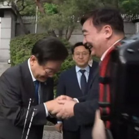

"韓반도체 부품 산업 오라" 中 '10만평의 초대' < 반도체 < 기사본문 - 디일렉(THE ELEC)

이미 몇몇 한국 반도체부품회사들이 들어갔다함..
10만평부지에 각종 세금혜택, 행정혜택, 임대료 면제, 지원금까지 조건이 파격적이고
중국고객사들이 현지생산업체를 우대하기에 중국쪽에 납품하는 한국 반도체부품회사로서는 뿌리치기 힘든 유혹이라는...
삼전만해도 반도체 짱깨수출 비중이 58퍼..

짱깨비중이 아직도 높아서 한국부품회사들의 경우도 매출에 짱깨비중이 높다함
이거 정부가 법으로 막아야 하는거 아님?
댓글
수집 당시 댓글 242개
· 하밍 · 11.05 12:30:46
ㅇㅇ · 11.05 04:35:32
· 하밍 · 11.05 12:30:14
우주 · 11.05 04:45:24
· 하밍 · 11.05 12:29:48
ㅇㅇ · 11.05 04:47:49
ㅇㅇ · 11.05 04:49:15
· 하밍 · 11.05 12:29:30
ㅇㅇ · 11.05 05:01:39
소녀사랑꾼 · 11.05 05:04:48
ㅇㅇ · 11.05 05:08:32
ㅇㅇ · 11.05 05:09:49
엑스쿠마 · 11.05 05:19:29
ㅇㅇ · 11.05 05:44:27
· 하밍 · 11.05 12:28:50
ㅇㅇ · 11.05 06:01:27
· 하밍 · 11.05 12:28:30
ㅇㅇ · 11.05 06:04:16
· 하밍 · 11.05 12:28:11
ㅇㅇ · 11.05 06:05:06
· 하밍 · 11.05 12:27:44
ㅇㅇ · 11.05 06:33:18
ㅇㅇ · 11.05 06:38:38
대재명
ㅇㅇ · 11.05 06:39:19
ㅇㅇ · 11.05 06:45:40
· ㅇㅇ · 11.05 07:50:57
· ㅇㅇ · 11.05 08:27:18
· 하밍 · 11.05 12:27:31
ㅇㅇ · 11.05 06:51:35
ㅇㅇ · 11.05 07:05:39
· ㅇㅇ · 11.05 07:51:43
· 하밍 · 11.05 12:27:05
ㅇㅇ · 11.05 07:18:11
철석 · 11.05 07:23:04
우리이니 · 11.05 07:34:06
한국은
중국의
일부
· ㅇㅇ · 11.05 08:28:07
ㄴ이런새끼 믿냐?
· ㅇㅇ · 11.05 08:31:06
. · 11.05 07:35:55
· . · 11.05 07:36:04

· ㅇㅇ · 11.05 08:31:26
ㅇㅇ · 11.05 07:50:25
ㅇㅇ · 11.05 08:10:23
ㅇㅇ · 11.05 08:13:02
ㅇㅇ · 11.05 08:22:45
· 하밍 · 11.05 12:26:36
ㅇㅇ · 11.05 08:23:09
ㅇㅇ · 11.05 08:26:52
· 하밍 · 11.05 12:26:15
ㅇㅇ · 11.05 08:30:27
· ㅇㅇ · 11.05 08:30:33
ㅇㅇ · 11.05 08:36:30
야갤러 · 11.05 08:46:08
ㅇㅇ · 11.05 08:53:38
ㅇㅇ · 11.05 09:11:03
· ㅇㅇ · 11.05 09:45:41
· 하밍 · 11.05 12:25:36
(’-’*)ㅇr뜌 · 11.05 09:41:14
ㅇㅇ · 11.05 09:53:47
ㅇㅇ · 11.05 10:07:07
ㅇㅇ · 11.05 10:43:54
ㅁㅇㄻㄹ · 11.05 11:08:50
· 하밍 · 11.05 12:25:08
ㅇㅇ · 11.05 11:16:32
· 하밍 · 11.05 12:24:49
ㅇㅇ · 11.05 11:25:56
· 하밍 · 11.05 12:24:19
ㅇㅇ · 11.05 11:48:59
· 하밍 · 11.05 12:24:07
ㅇㅇ · 11.05 11:49:26
· ㅇㅇ · 11.05 11:51:54
· 하밍 · 11.05 12:23:57
ㅇㅇ · 11.05 11:56:08
· 하밍 · 11.05 12:23:46
· ㅇㅇ · 11.05 12:48:11
ㅇㅇ · 11.05 12:33:32
· ㅇㅇ · 11.05 12:35:25
ㅇㅇ · 11.05 12:47:18
ㅇㅇ · 11.05 12:49:32
ㅇㅇ · 11.05 12:51:36
삼성 수출을
· ㅇㅇ · 11.05 12:51:48
막아 달라는
· ㅇㅇ · 11.05 12:51:56
2찍
· ㅇㅇ · 11.05 12:52:05
2찍 = 빨갱이
· ㅇㅇ · 11.05 12:52:17
ㅇㅇ · 11.05 13:14:44
ㅇㅇ · 11.05 13:14:49
ㅇㅇ · 11.05 13:31:18
· 하이든 · 11.05 14:14:58
· ㅇㅇ · 11.05 14:49:08
ㅇㅇ · 11.05 13:55:42
ㅇㅇ · 11.05 13:56:47
· 하이든 · 11.05 14:14:39
ㅇㅇ · 11.05 13:58:35
· 하이든 · 11.05 14:13:25
좆껑이 · 11.05 14:02:58
· 하이든 · 11.05 14:13:12
· 좆껑이 · 11.05 14:14:35
야룽이 · 11.05 14:37:45
필기구 · 11.05 16:22:58
환란 전 교회 휴거 · 11.05 23:32:34
JungNu · 11.06 11:38:04
· 미얌 · 11.05 02:20:58
· 미얌 · 11.05 02:21:06
· 미얌 · 11.05 02:21:11
· BDSM · 11.05 02:23:02
· 미얌 · 11.05 02:23:22
ㅇㅇ · 11.05 01:30:50
· ㅇㅇ · 11.05 01:32:16
· ㅇㅇ · 11.05 01:32:45
· ㅇㅇ · 11.05 05:54:55
ㅇㅇ · 11.05 01:32:28
Adriel · 11.05 01:33:49
ㅇㅇ · 11.05 01:34:40
· 미얌 · 11.05 02:20:34
BDSM · 11.05 01:35:22
d · 11.05 01:36:52
· 미얌 · 11.05 02:20:20
ㅇㅇ · 11.05 01:37:13
· ㅇㅇ · 11.05 01:39:11
· 미얌 · 11.05 02:20:14
ㅇㅇ · 11.05 01:38:27
· 미얌 · 11.05 02:20:06
ㅇㅇ · 11.05 01:40:09
ㅇㅇ · 11.05 01:40:23
· ㅇㅇ · 11.05 01:41:50
· 미얌 · 11.05 02:19:57
ㅋㄱㅋㄱㄱ · 11.05 01:42:10
· 미얌 · 11.05 02:19:49
ㅇㅇ · 11.05 01:45:05
· BDSM · 11.05 01:49:27
ㅇㅇ · 11.05 01:47:08
· 미얌 · 11.05 02:18:32
ㅇㅇ · 11.05 01:47:37
ㅇㅇ · 11.05 01:49:39
· ㅇㅇ · 11.05 02:19:41
Cast_Away · 11.05 01:50:20
· 미얌 · 11.05 02:18:47
ㅇㅇ · 11.05 01:50:29
· 미얌 · 11.05 02:19:04
DEXT · 11.05 01:56:34
· 미얌 · 11.05 02:19:14
· 식물빌런 · 11.05 07:44:15
ㅇㅇ · 11.05 01:58:00
ㅂㅈㅁㄴ · 11.05 02:03:49
· 미얌 · 11.05 02:19:20
· 식물빌런 · 11.05 07:44:20
· ㅇㅇ · 11.05 09:58:26
공정성장 · 11.05 02:03:56
ㅇㅇ · 11.05 02:04:12
· 미얌 · 11.05 02:19:27
ㅇㅇ · 11.05 02:11:32
· 미얌 · 11.05 02:19:33
· ㅇㅇ · 11.05 09:58:34
ㅇㅇ · 11.05 02:17:10
ㅇㅇ · 11.05 02:21:04
ㅇㅇ · 11.05 02:27:23
· ㅇㅇ · 11.05 02:30:24
· 미얌 · 11.05 03:06:46
· BDSM · 11.05 03:51:16
ㅇㅇ · 11.05 02:31:35
ㅇㅇ · 11.05 02:35:06
000 · 11.05 02:37:44
· 미얌 · 11.05 03:06:24
ㅇㅇ · 11.05 02:38:36
· 미얌 · 11.05 03:06:11
ㅇㅇ · 11.05 02:40:09
· 하밍 · 11.05 03:11:58
throne7344 · 11.05 02:40:47
· ㅇㅇ · 11.05 02:50:45
· ㅇㅇ · 11.05 02:52:26
· 미얌 · 11.05 03:05:17
· BDSM · 11.05 03:08:17
· ㅇㅇ · 11.05 09:58:45
ㅇㅇ · 11.05 02:44:18
· ㅇㅇ · 11.05 05:55:26
ㅇㅇ · 11.05 02:48:53
· 미얌 · 11.05 03:05:26
· ㅇㅇ · 11.05 09:58:53
ㅇㅇ · 11.05 02:54:42
· 미얌 · 11.05 03:05:42
ㅇㅇ · 11.05 02:55:48
ㅇㅇ · 11.05 03:06:21
· 미얌 · 11.05 03:07:03
· ㅇㅇ · 11.05 03:07:35
ㅇㅇ · 11.05 03:11:25
· 하밍 · 11.05 03:12:24
ㅇㅇ · 11.05 03:15:19
· ㅇㅇ · 11.05 03:15:49
ㅇㅇ · 11.05 03:19:43
ㅇㅇ · 11.05 03:35:16
· ㅇㅇ · 11.05 13:52:47
ㅇㅇ · 11.05 03:39:57
· 하밍 · 11.05 12:31:46
ㅇㅇ · 11.05 03:53:03
ㅇㅇ · 11.05 04:05:46
· 하밍 · 11.05 12:31:23
ㅇㅇ · 11.05 04:20:10
착한말만 · 11.05 04:26:36
ㅇㅇ · 11.05 04:31:50
ㅇㅇ · 11.05 04:34:29
· ㅇㅇ · 11.05 04:35:11
あい · 11.03 01:52:28
· 미얌 · 11.05 02:22:35
와히라나고미 · 11.03 01:53:59
ㅇㅇ · 11.03 01:55:53
· ㅇㅇ · 11.05 01:28:19
· ㅇㅇ · 11.05 02:01:53
ㅇㅇ · 11.03 02:00:34
· ㅇㅇ · 11.03 02:10:39
· ㅇㅇ · 11.05 02:01:25
땨뗘(봇) · 11.05 01:25:04
ㅇㅇ · 11.05 01:26:18
· ㅇㅇ · 11.05 01:33:36
· ㅇㅇ · 11.05 01:52:20
· 미얌 · 11.05 02:22:26
ㅇㅇ · 11.05 01:26:43
· ㅇㅇ · 11.05 01:27:07
ㅇㅇ · 11.05 01:27:15
· 미얌 · 11.05 02:22:11
ㅇㅇ · 11.05 01:27:29
ㅇㅇ · 11.05 01:27:31
· 미얌 · 11.05 02:22:02
ㅇㅇ · 11.05 01:28:00
· 미얌 · 11.05 02:21:55
ㄴㄴ · 11.05 01:28:41
ㅇㅇ · 11.05 01:29:16
· ㅇㅇ · 11.05 01:31:20
· ㅇㅇ · 11.05 01:33:03
· ㅇㅇ · 11.05 01:37:00
· 미얌 · 11.05 02:21:22
· 미얌 · 11.05 02:21:29
· 미얌 · 11.05 02:21:37
ㅇㅇ · 11.05 01:29:48
· ㅇㅇ · 11.05 01:30:07
· BDSM · 11.05 01:36:03
· BDSM · 11.05 01:37:44
· ㅇㅇ · 11.05 01:39:31
· ㅇㅇ · 11.05 01:48:10
· BDSM · 11.05 01:51:39
· ㅇㅇ · 11.05 01:52:26
· BDSM · 11.05 01:53:27
· BDSM · 11.05 01:54:12
· 미얌 · 11.05 02:20:51